🎬 شاهد الفيديو أولًا
فيديو صامت بنصوص على الشاشة يبني الدماغ كله خطوة بخطوة. يمكنك الإيقاف والرجوع أو الانتقال إلى فصل:
🚀 مهمتك: اجمع 5 نجوم
أجب عن الاختبارات السريعة في الدليل. كل إجابة صحيحة تُضيء نجمة.
ماذا ستبني
- صورة من 5×5 مربعات (بكسلات). المربع الداكن 1 والمربع الفارغ 0.
- «دماغ» مكوَّن من 25 وزنًا (واحد لكل مربع) وانحياز. يجمع الدماغ الوزن × البكسل فيحصل على نتيجة.
- بعد كل صورة يفحص الدماغ إجابته ويُعدّل الأوزان قليلًا. هذا التعديل هو التعلّم.
- في النهاية يُختبر الدماغ على صور لم يرها من قبل. الهدف: 90% أو أكثر.
قبل أن تبدأ
- Excel على حاسوب (Excel على الويب يعمل أيضًا).
- نزّل ملف البداية من أعلى هذه الصفحة وافتحه.
- الخلايا الصفراء = تكتب أنت. الخلايا الزرقاء = صيغ (تكتبها أنت أو تكون موجودة).
0الفكرة في دقيقة▶ شاهد هذا الجزء 0:07
الذكاء الاصطناعي لا «يرى» تفاحة. إنه يرى أرقامًا. يعطي دماغنا لكل مربع وزنًا. المربعات التي تظهر في التفاح تأخذ وزنًا موجبًا. والمربعات التي تظهر في الموز تأخذ وزنًا سالبًا.
النتيجة = الانحياز + (الوزن 1 × البكسل 1) + (الوزن 2 × البكسل 2) + … + (الوزن 25 × البكسل 25). النتيجة الكبيرة تعني تفاحًا والصغيرة تعني موزًا. الاحتمال هو 1/(1+EXP(-النتيجة)): النتيجة 0 تعني 50%.
1تعرّف على ملف العمل▶ شاهد هذا الجزء 0:39
يحتوي الملف على ست أوراق (التبويبات في الأسفل):
| الورقة | ما فائدتها |
|---|---|
| الصور | 12 صورة تدريب + 4 خانات حرة لصورك |
| التعلّم | غرفة المحرك: كل صف = الدماغ ينظر إلى صورة ويصحح نفسه |
| الدماغ | لوحة المتابعة: معدل التعلّم والرسوم البيانية وما ينظر إليه الدماغ |
| الاختبار | 10 صور لم يرها الدماغ |
| ارسم | ارسم صورتك واسأل الدماغ |
| البيانات | ورقة مساعدة (لا تكتب فيها) |
2انظر إلى صور التدريب▶ شاهد هذا الجزء 0:39
- افتح ورقة الصور. لكل صورة عنوان (صورة 1 …) وجواب في الزاوية العليا: 1 = تفاح، 0 = موز.
- انظر إلى التفاحات. أي المربعات داكنة في كل التفاحات؟ وانظر إلى الموزات. أي المربعات داكنة في الموز ولا تكون داكنة أبدًا في التفاح؟
- الخانات 13–16 فارغة. ستستخدمها في النهاية.
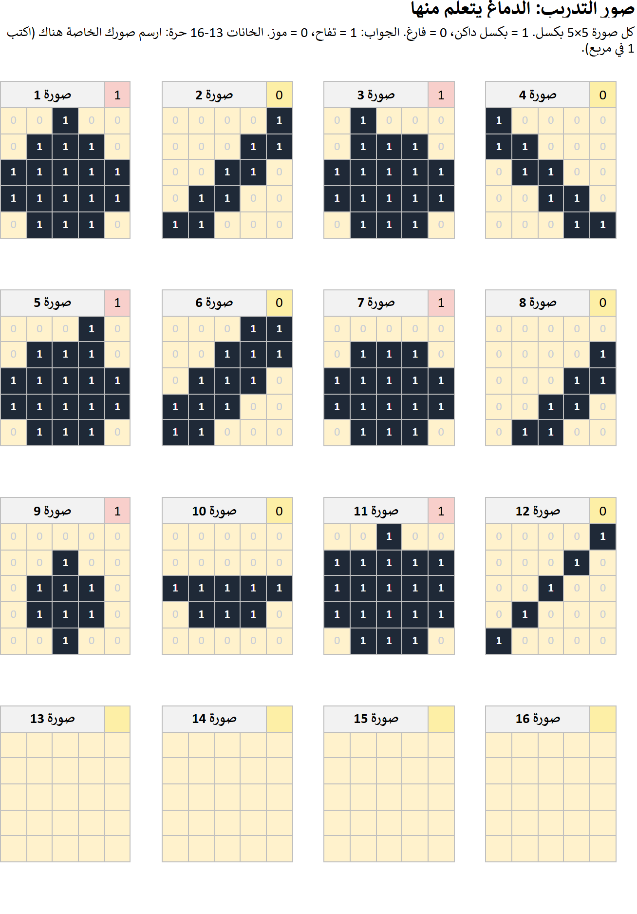
في ورقة الصور، ماذا يعني الرقم 1 في مربع؟
3علّم الدماغ: اكتب 5 صيغ▶ شاهد هذا الجزء 0:52
افتح ورقة التعلّم. الصف 7 هو الدماغ في البداية (كله أصفار). في الصف 8 ينظر الدماغ إلى الصورة 1. اضغط كل خلية واكتب (أو اضغط على الصيغة لنسخها):
نصيحة: اضغط على صيغة في الجدول لنسخها ثم الصقها في الخلية.
| الخلية | الصيغة | المعنى |
|---|---|---|
| F8 | =L7+SUMPRODUCT(M8:AK8,AL7:BJ7) | الانحياز + مجموع الوزن × البكسل |
| G8 | =1/(1+EXP(-F8)) | احتمال أن تكون تفاحًا |
| K8 | =E8-G8 | الجواب − الاحتمال (مقدار الخطأ) |
| L8 | =L7+$E$3*K8 | انحياز جديد = القديم + معدل التعلّم × الخطأ |
| AL8 | =AL7+$E$3*$K8*M8 | وزن جديد 1 = القديم + معدل التعلّم × الخطأ × البكسل |
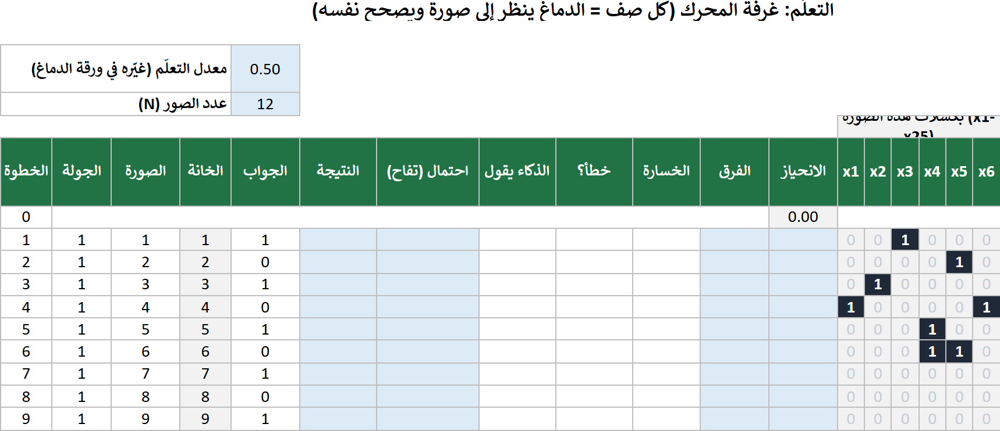
- اكتب الصيغة في F8 وG8 وK8 وL8. اضغط Enter بعد كل واحدة.
- اكتب صيغة الوزن في AL8. ثم حدّد AL8 وأمسك مقبض التعبئة واسحب يمينًا إلى BJ8 (25 وزنًا).
- الآن حدّد F8 واسحب حتى BJ199… أو الأسهل: اضغط F8 ثم أمسك Shift واضغط BJ199 ثم اضغط Ctrl+D (تعبئة للأسفل).
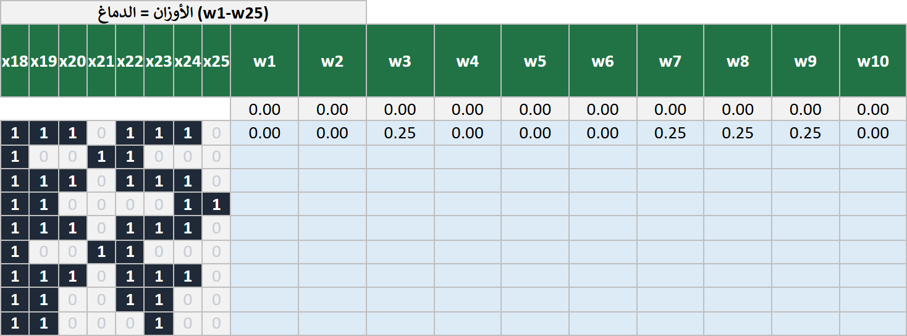
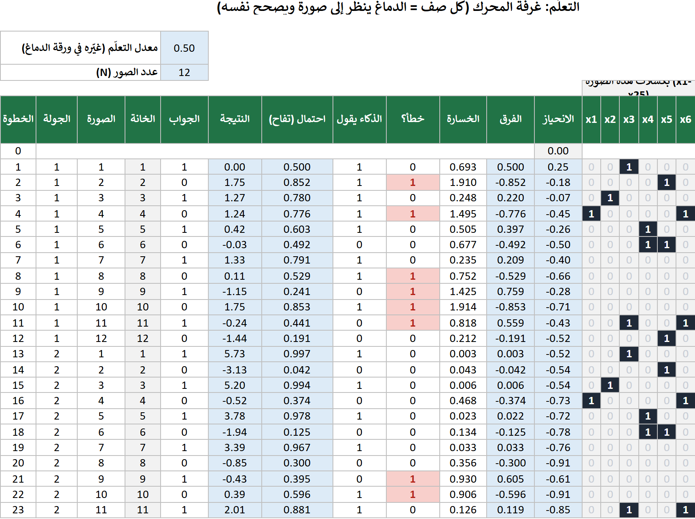
ماذا يفعل الدماغ بعد إجابة خاطئة؟
4شاهده يتعلم▶ شاهد هذا الجزء 2:17
- افتح ورقة الدماغ. الرسمان يعرضان الأخطاء في كل جولة والخسارة (مقدار خطأ الدماغ). يجب أن ينخفضا معًا.
- غيّر معدل التعلّم (الخلية الصفراء C4) إلى 0.05 ثم 0.5 ثم 5. انظر إلى الرسمين في كل مرة.
- أي معدل يصل إلى 0 أخطاء أولًا؟ وأيها الأبطأ؟
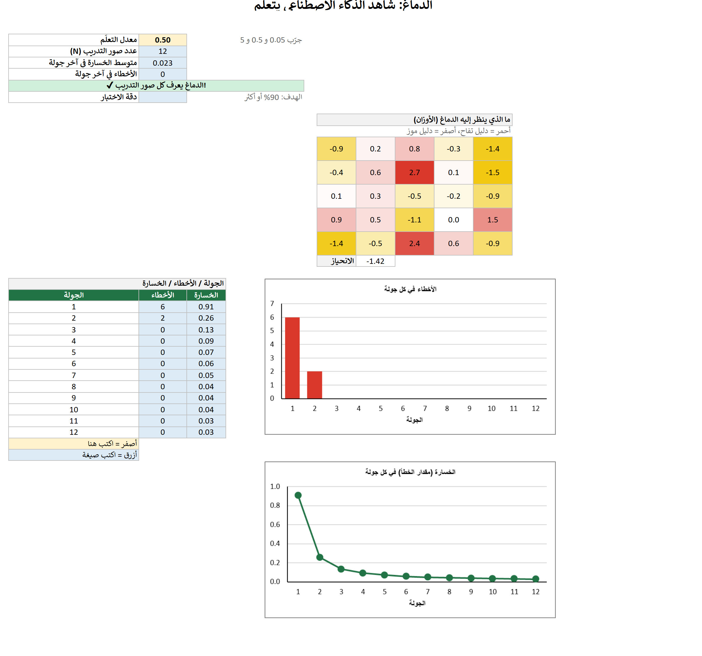
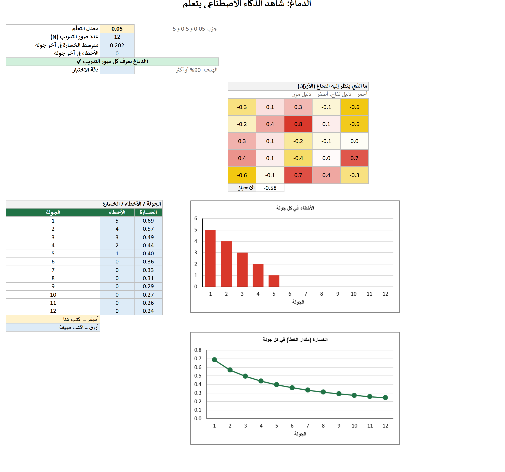
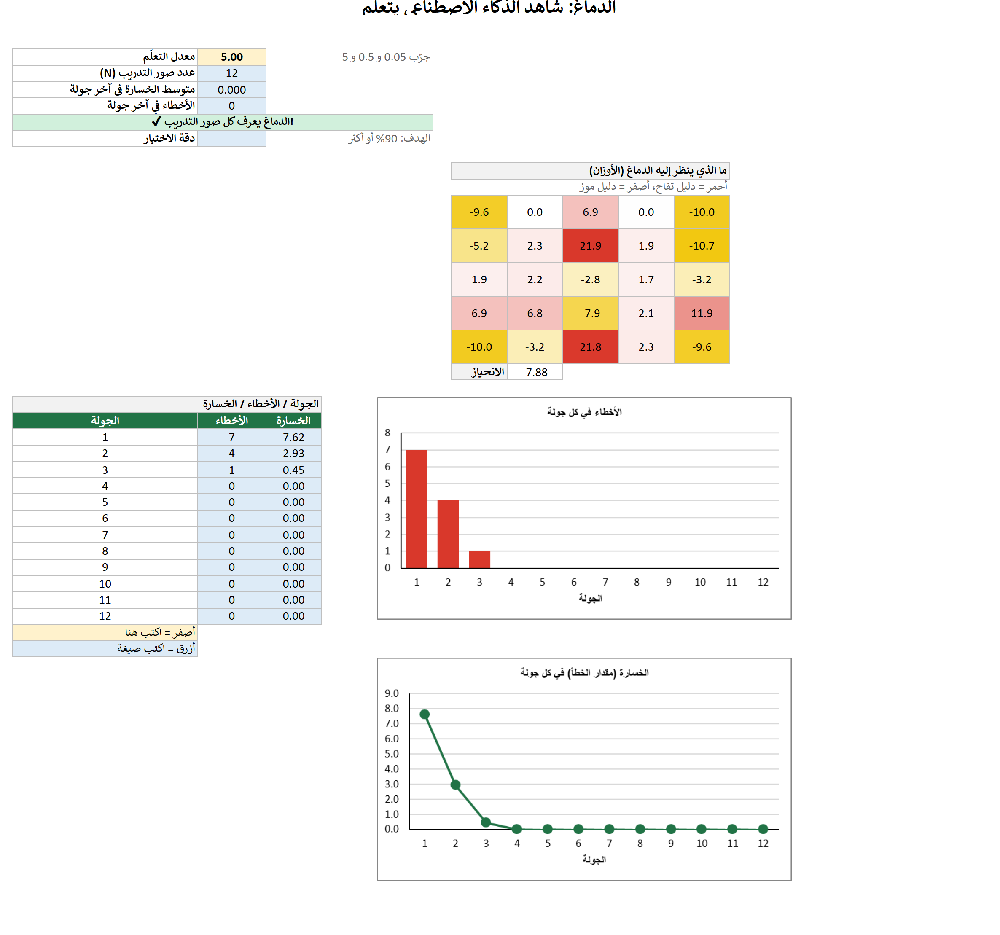
معدل التعلّم الصغير جدًا يعني…
5ماذا تعلّم الدماغ؟▶ شاهد هذا الجزء 2:17
في ورقة الدماغ تعرض الخريطة 5×5 الأوزان الـ 25. المربعات الحمراء أدلة على التفاح. والمربعات الصفراء أدلة على الموز. والبيضاء لا تهم.
- قارن الخريطة بالصور. هل تطابق المربعات الحمراء الأماكن الداكنة في التفاح؟
- أي مربع له أكبر وزن؟ لماذا تظن ذلك؟
6اختبر الدماغ▶ شاهد هذا الجزء 2:52
افتح ورقة الاختبار. الصور العشر جديدة. اكتب هذه الصيغ في الصف 4 ثم املأ للأسفل حتى الصف 13:
| الخلية | الصيغة | المعنى |
|---|---|---|
| C4 | ='التعلّم'!$L$199+SUMPRODUCT('البيانات'!D22:AB22,'التعلّم'!$AL$199:$BJ$199) | نتيجة صورة الاختبار 1 |
| D4 | =1/(1+EXP(-C4)) | الاحتمال |
| E4 | =IF(D4>=0.5,"تفاح","موز") | إجابة الدماغ |
| F4 | =IF(B4=E4,1,0) | 1 إذا كانت صحيحة |
| C16 | =COUNT(F4:F13) | كم صورة |
| C17 | =SUM(F4:F13) | كم صحيحة |
| C18 | =C17/C16 | الدقة (نسّقها كنسبة %) |
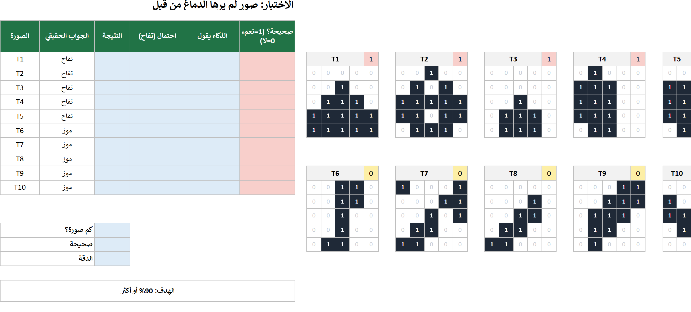
- اكتب الصيغ في C4 وD4 وE4 وF4. حدّد C4:F4 واسحب مقبض التعبئة إلى الصف 13.
- في C16 وC17 وC18 اكتب صيغ الملخص الثلاث. في C18 اضغط % في تبويب الصفحة الرئيسية.
- انظر إلى الصور الخاطئة (باللون الأحمر في العمود F). ما المشترك بينها؟
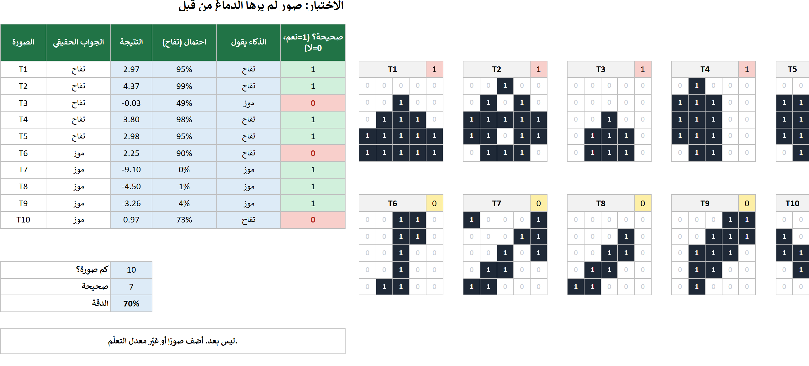
لماذا يجب ألا تكون صور الاختبار ضمن مجموعة التدريب؟
7ارسم صورتك▶ شاهد هذا الجزء 3:24
- افتح ورقة ارسم. اكتب 1 في المربعات لترسم. جرّب تفاحة وموزة — ثم نمطًا بلا معنى مثل رقعة الشطرنج.
- اقرأ ما يقوله الدماغ. هل يقول يومًا «لا أعرف»؟
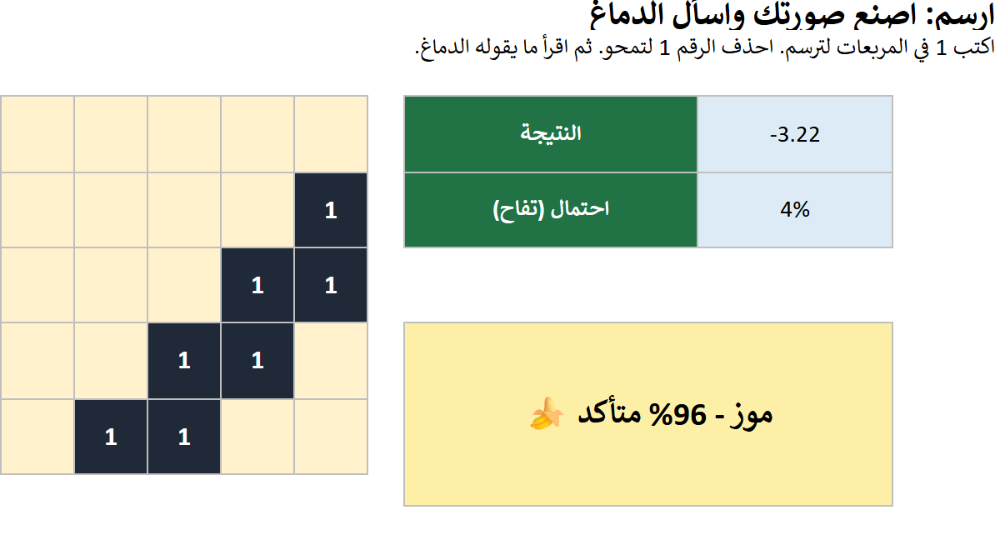
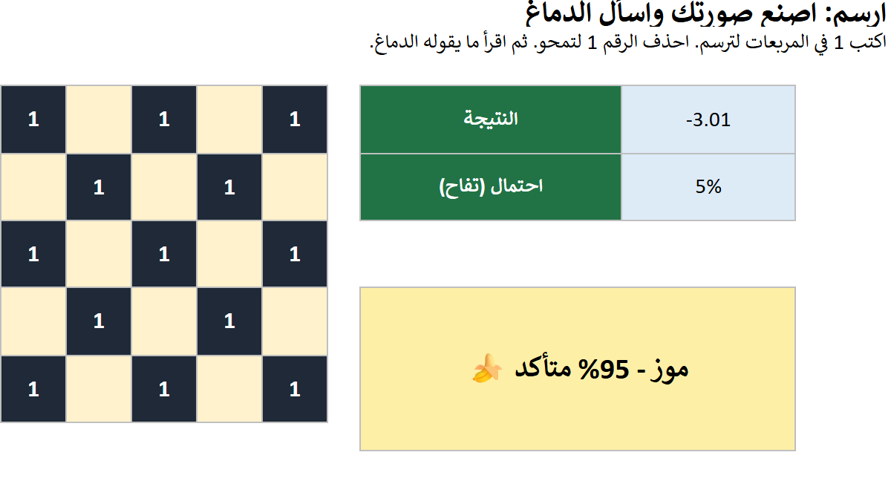
8الهدف: الوصول إلى 90%▶ شاهد هذا الجزء 3:38
أضف صور تدريب ليلتقي الدماغ بمواقف أكثر. استخدم الخانات الفارغة 13–16 في ورقة الصور: اكتب 1 في المربعات وضع الجواب (1 أو 0) في الزاوية العليا.
- ارسم تنويعات من عندك: تفاحة منقولة للأسفل أو لليسار، تفاحة صغيرة، موزة واقفة، موزة منقولة.
- لا تنسخ صور الاختبار. إن نسختها يكون الدماغ قد رأى الإجابات ولا قيمة للاختبار.
- كل شيء يُعاد حسابه تلقائيًا. راقب دقة الاختبار وسطر الهدف.
عالق؟ جرّب هذه الصور الأربع (1 = مربع داكن). تفاحتان وموزتان:
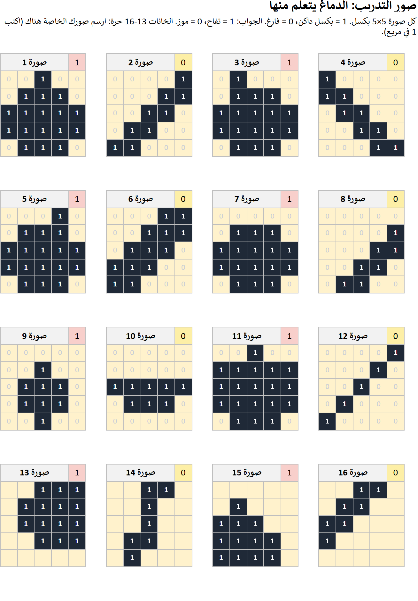
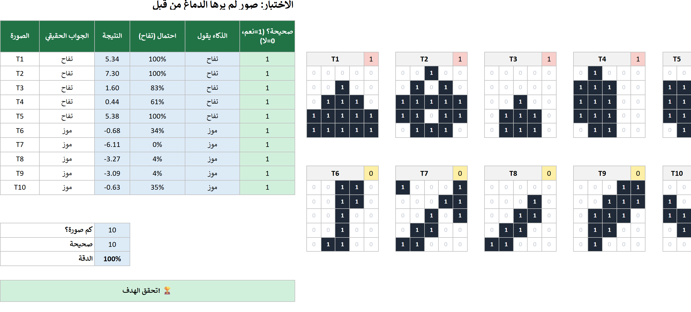
أي صور التدريب الجديدة تساعد أكثر؟
9فكّر في الأمر
- لماذا فشل الدماغ في بعض صور الاختبار مع أنه يعرف كل صور التدريب؟
- لماذا ساعدت إضافة صور مرسومة بطرق مختلفة؟ كيف يشبه ذلك حزمة الإصلاح في المرحلة 1؟
- ماذا يحدث مع معدل التعلّم 5 والصور الأربع الإضافية؟ ولماذا؟
- كيف يشبه هذا الدماغ Teachable Machine؟ وكيف يختلف؟
- موزة مرسومة واقفة تخدع الدماغ. الذكاء الاصطناعي الحقيقي للصور يبحث عن الأشكال في أي مكان من الصورة. لماذا هذا أفضل؟
المحطة التالية: المرحلة 4 — خريطة المحقق: كيف يقرر الذكاء الاصطناعي، مشروحًا على خريطة.
⭐ تحدٍّ
- اوصل إلى 100% في الاختبار بالصور الأربع الإضافية فقط.
- ارسم صورة تجعل الدماغ يقول تفاح بأكثر من 90% مع أنها موزة.
- ابحث عن معدل التعلّم الذي يصل إلى 0 أخطاء في أقل عدد من الجولات.
كلمات يجب معرفتها
| English | العربية | עברית |
|---|---|---|
| pixel | بكسل | פיקסל |
| weight | وزن | משקל |
| bias | انحياز | הטיה |
| score | نتيجة | ציון |
| probability | احتمال | הסתברות |
| learning rate | معدل التعلّم | קצב למידה |
| round (epoch) | جولة | סיבוב |
| loss | خسارة | הפסד |
| train | تدريب | אימון |
| test | اختبار | מבחן |
أسئلة
ورقة الدماغ تقول «املأ ورقة التعلّم أولًا».
لم تكتب الصيغ في ورقة التعلّم بعد (أو لم تملأها للأسفل حتى الصف 199).
تظهر #NAME? أو #REF!.
اسم الورقة في الصيغة خاطئ. اضغط الخلية في الورقة بدل كتابة اسم الورقة.
أرقامي تختلف قليلًا عن الدليل.
إذا غيّرت صورة أو معدل التعلّم تتغير الأرقام. وهذا صحيح.
هل أستطيع استخدام Google Sheets؟
نعم للصيغ، لكن الألوان والرسوم قد تبدو مختلفة. يُنصح باستخدام Excel.